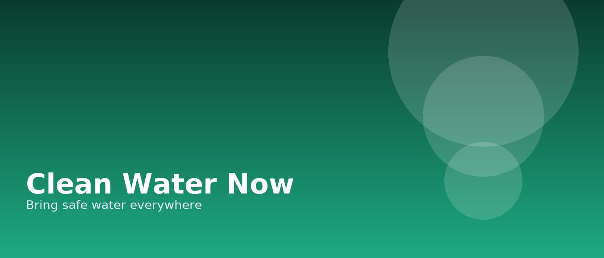

Pastel calm, measurable impact
A light, friendly UI with blob visuals and a donation timeline.
Phase 1 — Community survey and site selection
Phase 2 — Well drilling & filtration install
Phase 3 — Maintenance training & reporting

1,284
Projects funded
92%
Funds to programs
3.1M
People served